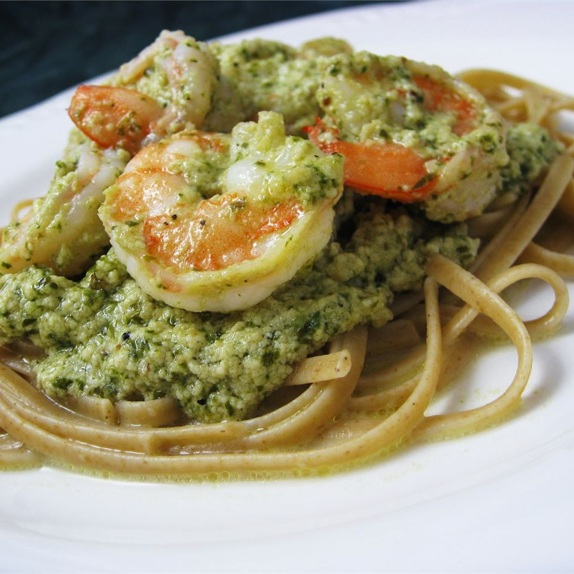

Pesto Shrimp Pasta

Description
Delicious, creamy pesto shrimp pasta
Ingredients
- Linguine pasta
- Shrimp
- Pesto
- BButter
- Heavy cream
- Parmesan cheese
- Black pepper
Steps
- Bring a large pot of lightly salted water to a boil. Add linguine pasta, and cook for 8 to 10 minutes, or until
al
dente; drain.
- In a large skillet, melt the butter over medium heat. Stir in cream, and season with pepper. Cook 6 to 8
minutes,
stirring constantly.
- Stir Parmesan cheese into cream sauce, stirring until thoroughly mixed. Blend in the pesto, and cook for 3 to 5
minutes,
until thickened.
- Stir in the shrimp, and cook until they turn pink, about 5 minutes. Serve over the hot linguine.